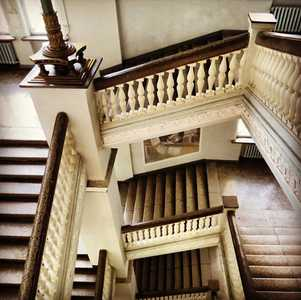
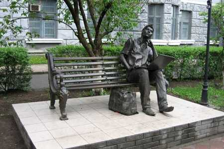
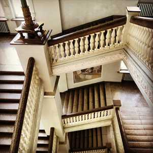
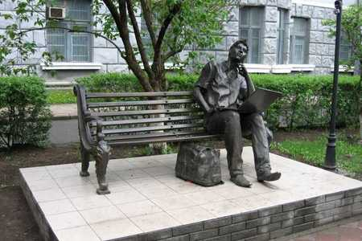

Найкраще місто у всесвіті Харків
Харків — місто на північному сході України, важливий промисловий і науковий центр країни,
адміністративний центр.
Місто Харків заснували українські козаки та селяни, у середині 1650-х років.
У місті 142 науково-дослідні інститути, 45 вищих навчальних закладів, включаючи Харківський національний
університет імені В. Н. Каразіна, який
входить до топ-500 вузів світу, та політехнічний інститут, що входить до топ-1000; 16 музеїв, міська
картинна
галерея, 6 державних театрів, 80 бібліотек.
Харківський Національний Університет Радіоелектроніки
Колись заочно закінчив Факультет комп’ютерних наук у ХНУРЕ
 



У свідомому житті почав працювати
Спочатку на складі, а після закінчення Университету у лабораторії та сертифікації.
У лабораторій проводив випробування газового обладнання, в основному для подальшої сертифікації.
Іноді були випробування які проводили на замовлення експерементальніх моделей обладнання
відчизняних виробників.
В сертифікації вів багато робіт, та був у богатьох містах України на підприємствах,
а іноді і за кордоном.
Хобі
Рибалка це прекрасний відпочинок на природі, а після вдалої риболовлі, іноді, хочеться ще добу відпочити,
так
так
коли постійно клює від постійних вправ і присідань може бути крепатура.
Колись у дитинстві з другом лагодили магнітофон "маяк", розбирали разів 5, і постійно залишалися зайві
деталі.
Город..... смішно?, та ви не куштували моїх помідорів. У 22 році нам із сім'єю довелося виїхати з міста в
село,
а там мені дали город, там я й провів літо.